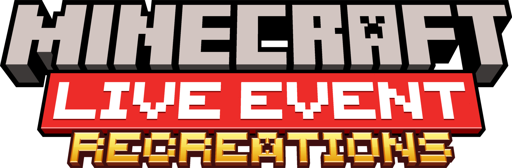

Volunteer Jobs
We are currently looking for the following volunteers:
- Scripting developers
- Knows how to use and can code using the Minecraft Scripting API
- Bonus: Can keep everything scripting-related organized
- Behavior pack developers
- Can add entities
- Can add items
- Can add custom blocks
- Bonus: Can keep the pack organized
- Website developer
As you can probably tell, the site well... needs a bit of help but nothing major
If you are interested in any of these positions, please join our Discord Server and contact ThatJadon 26.